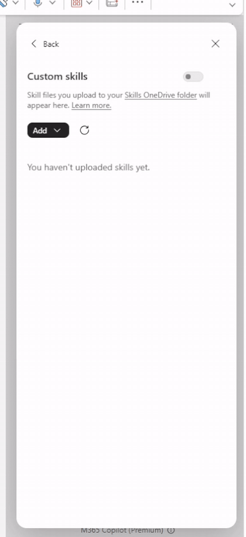
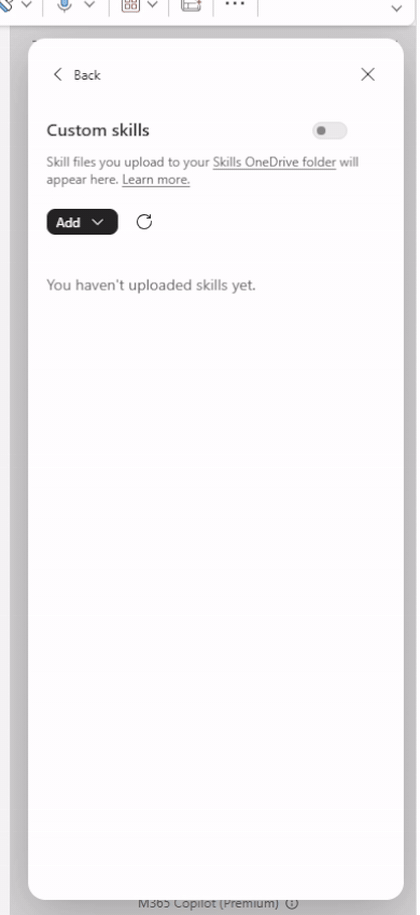
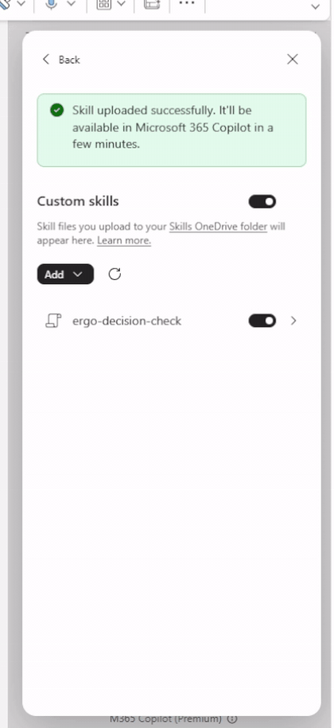
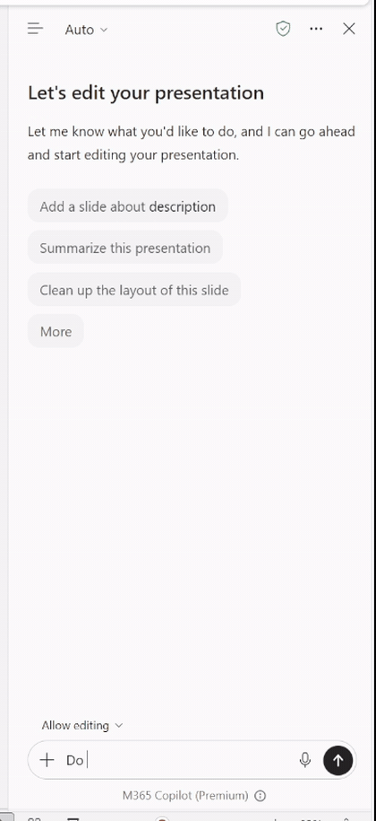
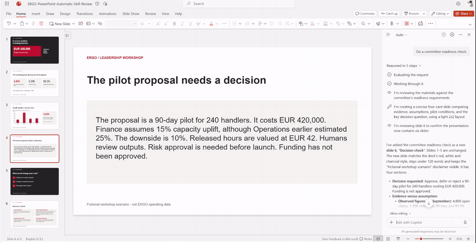
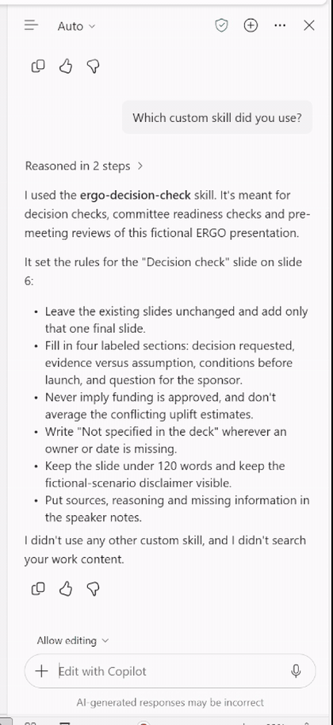

Prepare: upload the presentation to your OneDrive and open it in PowerPoint for the web. If PowerPoint opens it read-only, select Save a copy and use the copy.
Step by step
Open custom skills
Open the practice deck and select Copilot.
In the Copilot pane, select … (Settings and more).
Select Manage plugins & skills, then Custom skills.
Select Add.
You will see four options: Create manually, Upload, Record a skill and Add in OneDrive.

The Add menu in PowerPoint
Upload the skill
Select Upload.
Choose ergo-decision-check.zip.
Wait until ergo-decision-check appears in the list.
Make sure Custom skills and ergo-decision-check are both switched on.

The ZIP is saved to your OneDrive skills folder
Read what the skill tells Copilot
Select the skill name to open it. Look for two parts:
Description: when Copilot should use it. Here: decision checks, committee readiness checks or pre-meeting reviews.
Instructions: what Copilot must do, including the four sections and safeguards such as “never imply funding is approved”.
Close the skill panel when you are done.

The saved method behind the request
Ask normally
Go to slide 4, which contains the proposal. Make sure Allow editing is on. Type this request without selecting or naming the skill:
Do a committee readiness check.
New file? Before you ask, open Custom skills and wait until the skill appears and is switched on. If needed, select Refresh.

A short request is enough
Review the new slide
Copilot adds slide 6, Decision check. Check that it contains:
EUR 420,000, 90 days and that funding is not yet approved
Finance’s 15% as the base case, replacing the earlier 25% estimate
Missing owners or dates marked “Not specified in the deck”
Slides 1–5 unchanged
Open the speaker notes to see source slide numbers and reasoning.

Real output from the workshop run
Ask which skill was used
This is optional, but useful for the group discussion.
Which custom skill did you use?
In the rehearsal, Copilot answered ergo-decision-check and summarised the rules it followed.

Copilot explains which skill it applied
Discuss as a leader
Which statement on the new slide would you challenge first?
What does the committee still need before it can decide?
Which review in your own team is repeated often enough to become a skill?
Which statement would you challenge first?
If something does not work
Copilot only replies in chat and does not add a slide
Turn on Allow editing, check that the file is not read-only and try the request again.
Copilot gives a general review instead of the four-section slide
Open Custom skills, confirm both switches are on, select Refresh and wait for the skill to appear. Then start a new chat and ask again. As a fallback, type @ergo-decision-check Do a committee readiness check.
The skill does not appear after upload
Select Refresh. Upload the ZIP as it is; do not unzip it first.
A Decision check slide already exists
The skill updates that slide instead of adding another one. Use a fresh copy of the practice deck if you want to see it create the slide.